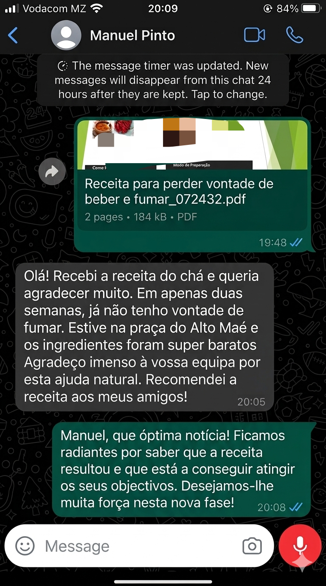

Por Que Muitas Pessoas Estão Interessadas Nesta Receita?
Receita simples, ingredientes baratos e modo de preparação explicado passo a passo.
📱 Veja os resultados da nossa receita



Receita simples, ingredientes baratos e modo de preparação explicado passo a passo.

Preço Normal: 500 MT
Receba a receita imediatamente após a confirmação do pagamento.
COMPRAR RECEITA AGORA“Gostei muito porque os ingredientes são simples e consegui preparar em casa sem dificuldade.”
— Carlos M.“Recebi tudo no WhatsApp imediatamente após o pagamento.”
— Julieta S.“Explicação simples e fácil de entender.”
— Ernesto P.